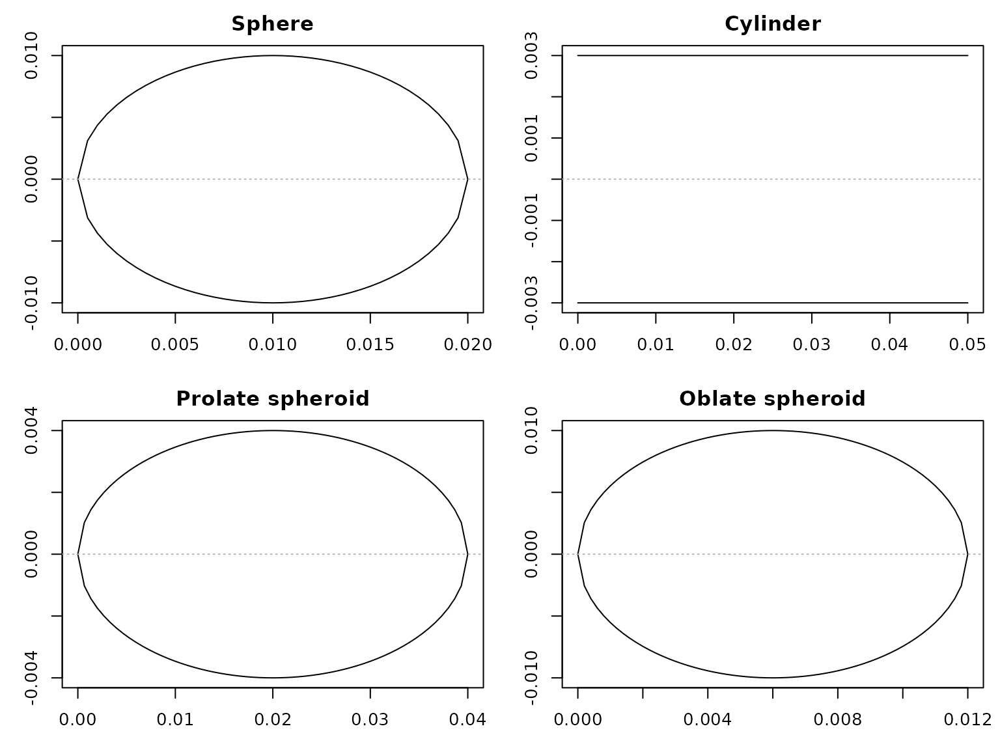
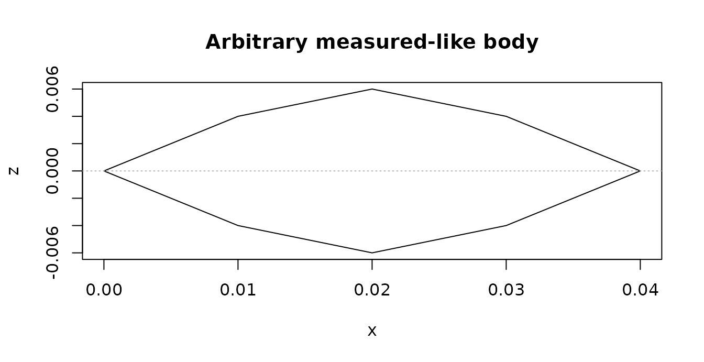
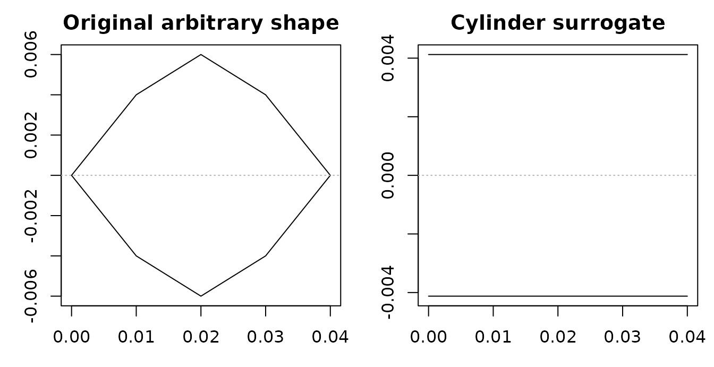

Overview
A shape describes geometry only. It does not assign material properties, boundary conditions, or a physical target type. Those are added when the shape is used to build a scatterer.
Every constructor on this page returns an S4 object derived from the
Shape class.
A Shape contains a position_matrix and a
shape_parameters list. Keeping geometry separate makes it
possible to inspect, reuse, or simplify a body before choosing a
scattering model.
A detailed outline is not automatically better. Use a canonical shape when its geometry is part of the model assumption. Preserve a measured or segmented shape when local morphology is important to the calculation.

Choosing a constructor
| Constructor | Representation | Main inputs |
|---|---|---|
sphere() |
Sphere | Radius |
cylinder() |
Straight or tapered cylinder | Length and radius, or a length-to-radius ratio |
prolate_spheroid() |
Elongated spheroid | Body length and maximum radius |
oblate_spheroid() |
Flattened spheroid | Body-axis length and equatorial radius |
polynomial_cylinder() |
Cylinder with a polynomial radius profile | Length, radius, and polynomial coefficients |
arbitrary() |
Measured or user-defined profile | Coordinate and dimension vectors |
The direct constructors make the resulting class clear. The create_shape()
wrapper can dispatch to a canonical constructor when a single
programmatic interface is more convenient.
Canonical shapes
Canonical shapes are useful for model families derived in spherical, cylindrical, or spheroidal coordinates. They are also useful for benchmarks and controlled model comparisons. Construct them with dimensions in meters unless the surrounding workflow explicitly handles another unit convention:
library(acousticTS)
sphere_shape <- sphere(
radius_body = 0.01,
n_segments = 40
)
cylinder_shape <- cylinder(
length_body = 0.05,
radius_body = 0.003,
n_segments = 80
)
prolate_shape <- prolate_spheroid(
length_body = 0.04,
radius_body = 0.004,
n_segments = 60
)
oblate_shape <- oblate_spheroid(
length_body = 0.012,
radius_body = 0.01,
n_segments = 60
)n_segments controls the axial discretization. Increase
it when the radius profile or downstream numerical method requires finer
resolution, then check that the result is insensitive to further
refinement.

Profiles produced by the four canonical constructors.
Stored coordinates
Canonical and arbitrary shapes use a common axial profile. The
x column gives the axial location. The zU and
zL columns give the upper and lower profile bounds. Some
arbitrary shapes also contain w, the transverse span in the
y direction.

For a sphere of radius a centered at x_c, the stored profile follows:
z_U(x) = \sqrt{a^2 - (x-x_c)^2}, \qquad z_L(x) = -z_U(x).
For a straight cylinder of radius a, the stored bounds are:
z_U(x) = a, \qquad z_L(x) = -a.
A polynomial or tapered cylinder retains the same columns while allowing the local radius to vary with x.
For a prolate spheroid, the body semimajor axis lies along x and the semiminor axis lies along z. The corresponding focal half-distance is:
q = \sqrt{a^2-b^2},
Here, the semimajor axis a is greater than the semiminor axis b. These coordinates describe the geometry. Target orientation is assigned later when building the scatterer.
Use extract()
to inspect either slot without editing the S4 object directly:
## x y z zU zL
## [1,] 0.04000000 0 0 0.000000000 0.000000000
## [2,] 0.03933333 0 0 0.001024153 -0.001024153
## [3,] 0.03866667 0 0 0.001436044 -0.001436044
## [4,] 0.03800000 0 0 0.001743560 -0.001743560
## [5,] 0.03733333 0 0 0.001995551 -0.001995551
## [6,] 0.03666667 0 0 0.002211083 -0.002211083
extract(prolate_shape, "shape_parameters")## $length
## [1] 0.04
##
## $radius
## [1] 0.000000000 0.001024153 0.001436044 0.001743560 0.001995551 0.002211083
## [7] 0.002400000 0.002568181 0.002719477 0.002856571 0.002981424 0.003095516
## [13] 0.003200000 0.003295789 0.003383621 0.003464102 0.003537733 0.003604935
## [19] 0.003666061 0.003721410 0.003771236 0.003815757 0.003855155 0.003889587
## [25] 0.003919184 0.003944053 0.003964285 0.003979950 0.003991101 0.003997777
## [31] 0.004000000 0.003997777 0.003991101 0.003979950 0.003964285 0.003944053
## [37] 0.003919184 0.003889587 0.003855155 0.003815757 0.003771236 0.003721410
## [43] 0.003666061 0.003604935 0.003537733 0.003464102 0.003383621 0.003295789
## [49] 0.003200000 0.003095516 0.002981424 0.002856571 0.002719477 0.002568181
## [55] 0.002400000 0.002211083 0.001995551 0.001743560 0.001436044 0.001024153
## [61] 0.000000000
##
## $semimajor_length
## [1] 0.02
##
## $semiminor_length
## [1] 0.004
##
## $length_radius_ratio
## [1] 10
##
## $n_segments
## [1] 60
##
## $length_units
## [1] "m"Arbitrary and measured shapes
Use arbitrary() when measured coordinates, taper,
curvature, or anatomical detail should be retained. It accepts an
existing position matrix or named coordinate vectors. The following
symmetric profile is defined by axial locations and local radii:
measured_like <- arbitrary(
x_body = c(0, 0.01, 0.02, 0.03, 0.04),
radius_body = c(0, 0.004, 0.006, 0.004, 0)
)
extract(measured_like, "position_matrix")## x a zU zL
## [1,] 0.00 0.000 0.000 0.000
## [2,] 0.01 0.004 0.004 -0.004
## [3,] 0.02 0.006 0.006 -0.006
## [4,] 0.03 0.004 0.004 -0.004
## [5,] 0.04 0.000 0.000 0.000For asymmetric profiles, provide zU_body and
zL_body. A transverse w_body vector can record
width at the same axial stations. All coordinate vectors should describe
the same body in a consistent coordinate system and unit convention.

An arbitrary profile defined by axial locations and local radii.
Operations such as translating, reanchoring, resampling, smoothing, and inflating a shape are covered in Shape Manipulation.
Fitting a canonical surrogate
A measured body sometimes needs a canonical approximation for a
shape-specific model or a controlled comparison. This approximation
should be explicit. canonicalize_shape()
can fit a sphere, cylinder, prolate spheroid, or oblate spheroid while
returning diagnostics for the reduction.
Available fitting rules preserve volume, preserve length and volume, or fit the equivalent-radius profile by least squares. The default depends on the requested target shape. There is no single best rule for every measured body.
cylinder_fit <- canonicalize_shape(
measured_like,
to = "Cylinder",
diagnostics = TRUE
)
data.frame(
fitted_shape = class(cylinder_fit$shape)[1],
source_length_m = cylinder_fit$diagnostics$source$length,
fitted_length_m = cylinder_fit$diagnostics$target$length,
radius_rmse = cylinder_fit$diagnostics$fit$radius_rmse,
radius_nrmse = cylinder_fit$diagnostics$fit$radius_nrmse
)## fitted_shape source_length_m fitted_length_m radius_rmse radius_nrmse
## 1 Cylinder 0.04 0.04 0.002740549 0.4567582
The original arbitrary profile and its fitted cylindrical surrogate.
Judge the surrogate using both the plotted profiles and the reported length, volume, radius, and fit errors. A model applied to the fitted object describes the canonical surrogate, not the original irregular body.
Before building a scatterer
Check the following before adding physical properties:
- overall length and maximum radius
- axial ordering and coordinate units
- upper, lower, and transverse profiles where present
- segment resolution
- agreement between the geometry and the intended model assumptions
- canonicalization error if a surrogate was fitted
Next, prepare the material properties and use Building Scatterers to combine the geometry with its physical interpretation.